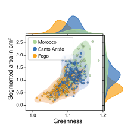

Plant nutrition
Understanding plant adaptation to challenging soil environments
I investigate how plants adapt to different soil environments, with a particular focus on nutrient homeostasis. By combining digital phenotyping, ICP-MS ionomics, genetic mapping, and environmental association analyses, I aim to understand the genetic and environmental factors underlying natural variation in plant nutrient accumulation.
Digital phenotyping
Quantifying leaf chlorosis
Mineral nutrient imbalances can cause chlorosis, negatively affecting plant health and ultimately reducing yield. In this example, plants from a natural population originating from a volcanic island in Cape Verde, Fogo, developed chlorosis when grown in standard potting mix, despite appearing healthy in their native environment.
To investigate the chlorosis observed under greenhouse conditions, I developed an image-based phenotyping approach to quantify chlorosis across thousands of samples.


Ionomics
Characterizing the plant elemental composition
To investigate the nutrient imbalances associated with leaf chlorosis, I used inductively coupled plasma mass spectrometry (ICP-MS) to characterize leaf elemental composition. This analysis revealed that the Fogo population (orange) showed a distinct leaf ionomic profile compared to their closest relative populations Santo Antão (blue) and Morocco (green).
More broadly, I have used ICP-MS to characterize natural variation in plant elemental composition in global populations, analyzing thousands of samples.